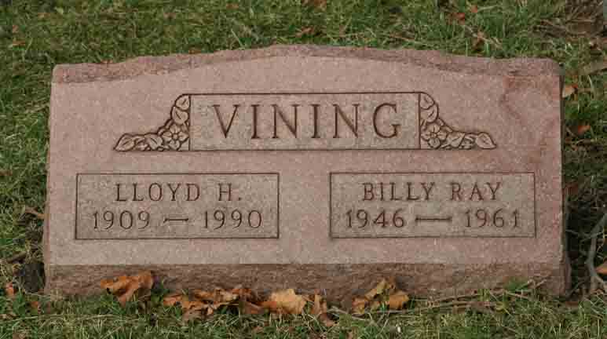
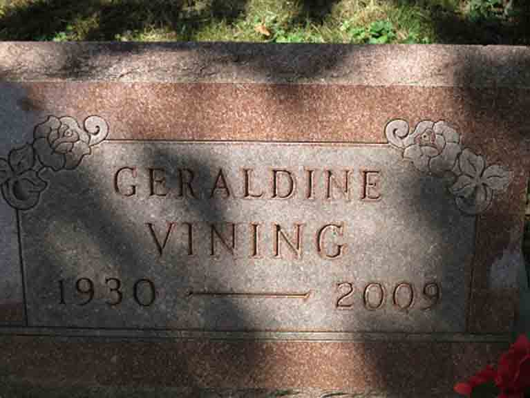

Documentation for Lloyd Henry Vining and (1) Elizabeth Pierce; (2) Esther [...]; (3) Geraldine Stanley
Death Data
Headstone for Lloyd Henry Vining and son Billy Raymond Vining, Beech Grove Cemetery, Muncie, Delaware County, Indiana (from Find A Grave):

Gravestone for Geraldine (Stanley) Vining, in Beech Grove Cemetery, Muncie, Delaware County, Indiana (from Find A Grave):
